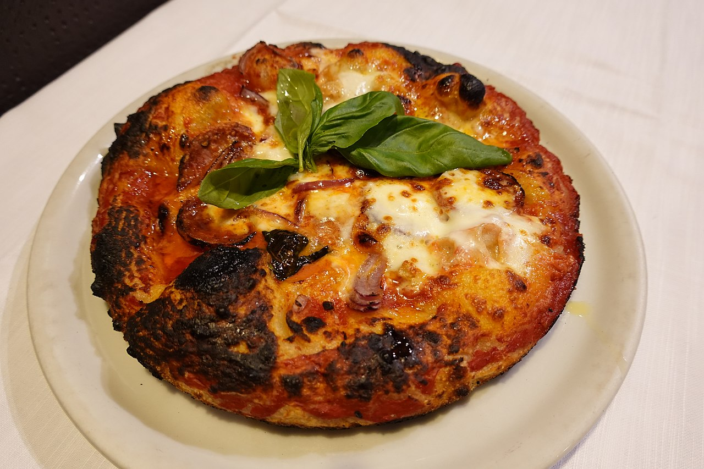

Historia
Los antecedentes de la pizza se encuentran en el empleo del pan de trigo en las antiguas culturas de Egipto, Persia, Grecia y Roma. En la época de Darío I el Grande (521-500 a. C.), los soldados persas comían un pan plano con queso fundido y dátiles en la parte superior. En la Antigua Roma, los soldados consumían un pan plano con aceite de oliva y hierbas, similar a la focaccia. Panes planos con agregados similares se encuentran en diversas culturas del Mediterráneo.
La pizza en sus versiones más tradicionales, la marinara y la cubierta de salsa de tomate y mozzarella (napolitana), procede de la ciudad italiana de Nápoles. Las primeras referencias a hornos para pizza datan de finales del siglo xvii. La pizzería 'Ntuono, trasladada en 1738 a la zona de Port'Alba, se encontraba en actividad desde 1732. Hacia mediados del siglo xviii, en Nápoles había más de ochenta pizzerías. En la primera mitad del siglo xix se consideraba una «comida plebeya», de napolitanos pobres. Ya en la década de 1830, se encuentran menciones a este plato, por ejemplo en el libro Napoli, contorni e dintorni (1830), escrito por un tal Riccio. Poco después, en 1843, Alejandro Dumas publicó Le corricolo, una crónica de viaje en la que registra las impresiones de su visita al Reino de Nápoles en 1835.
Nápoles se había diferenciado por haber incorporado, en la segunda mitad del siglo xvii, el tomate proveniente de América a la alimentación, mientras que en otros países europeos se creía que era venenoso o causante de enfermedades. Las semillas de tomate provenientes de Perú en la década de 1770 originaron una variedad conocida como tomate San Marzano, cuya baja acidez lo hizo óptimo para la preparación de salsa. La combinación de pan, salsa de tomate y queso dio a origen a un alimento caliente, apetecible y barato para los habitantes humildes de la ciudad. La vinculación con la pasta y la pizza en el siglo xix hizo que el tomate se convirtiera en un ingrediente dominante de la gastronomía italiana.

Pese a que la pizza hecha con pan, queso, tomate y albahaca data al menos de comienzos del siglo xix, un relato tradicional, que se ha probado históricamente falso, sostiene que en junio de 1889, en ocasión de la visita a Nápoles de la reina de Italia, Margarita de Saboya, un cocinero de la pizzería Brandi llamado Raffaele Esposito quiso homenajearla con una pizza que llevara los colores de la bandera italiana (blanco, rojo y verde), utilizando como ingredientes mozzarella, tomate y albahaca, y la llamó pizza margarita. Gentilcore evalúa que la tradición de la pizza margarita combina varios movimientos históricos: por un lado un proceso de difusión nacional de una clásica comida napolitana, bajo el influjo de la unificación italiana que incorporó el reino del sur de la península, hasta entonces bajo el poder de los Borbones, el populismo de la nueva monarquía saboyana y el triunfo de la cocina local sobre la francesa.
La diáspora italiana iniciada a mediados del siglo xix, difundió el gusto por la pizza a varios países de América y, finalmente, a todo el mundo.
Ingredientes
Los ingredientes más usados al momento de preparar Pizza son:
Preparación
Una parte crucial de la elaboración de la pizza es la preparación de la masa y su leudado. La harina debe mezclarse manualmente con el agua, la sal y la levadura hasta formar una masa homogénea, elástica y suave. A continuación, la masa debe dejarse en reposo, generalmente en forma de bollo, para que leude y luego se separa para formar cada una de las bases, generalmente redondas. La tradicional pizza napolitana utiliza harina doble cero (que tiene mayor cantidad de gluten), una gran cantidad de agua (un litro cada 1,7 kilos de harina) y se deja leudar dos días para hacerla más digestible, ya que evita que el proceso de fermentación finalice en el estómago. Luego se forma un disco relativamente delgado, generalmente del tamaño de un plato grande o algo mayor. Antes de ingresarla al horno, se pinta la superficie con salsa de tomate y se cubre con queso cortado en pedazos y distribuido para que se derrita uniformemente, sin desbordar. Lo mismo se hace en caso de que sean otros los ingredientes agregados.
Horneado

Para la preparación de la pizza, es esencial la temperatura del horno que, para la Associazione Verace Pizza Napoletana, tiene que alcanzar 420 grados centígrados. Esa temperatura permite que la cocción sea homogénea y rápida, de modo tal que la masa mantenga una textura adecuada y los ingredientes no se quemen. A esa temperatura la pizza debe cocinarse unos dos minutos. Todo este proceso fue corroborado de manera científica, a excepción de la temperatura, que determinaron en 325-330 grados centígrados con un máximo de 390 cuando son muchos los comensales.
Variantes
En Italia
En Italia, la variante regional con más tradición es la pizza napolitana, que es, además, el único tipo de pizza italiana reconocido a nivel nacional y europeo. La masa contiene agua, harina, levadura y sal, nunca aceite, y el horno donde se cuece debe ser a leña. Su proceso e ingredientes están definidos en la norma UNI 10791: 98, elaborada por la Associazione Verace Pizza Napoletana junto con la especificación ETG. Esta asociación, fundada en 1984, se dedica a promover el conocimiento de la pizza napolitana artesanal. Solo dos variantes están reconocidas: marinara y margarita.
En Sicilia, las pizzas se caracterizan por ser rectangulares y de masa gruesa. Es muy popular la pizza de Palermo (sfincione palermitano), que contiene tomate, anchoas, caciocavallo, cebolla, pan rallado y orégano. En Catania se consume la scacciata y en la provincia de Siracusa el pizzolo, que puede ser dulce o salado.
En el Piamonte, particularmente en Turín, se puede encontrar la pizza al tegamino o al padellino. Se cocina en la sartén, por lo que la base queda ligeramente frita y es bastante gruesa y blanda. En Marcas, la pizza marchigiana se puede encontrar en cuatro variantes: bianca con romero, bianca con cebolla, rossa simple y rossa con mozzarella, donde por bianca y rossa se entiende, respectivamente, con y sin tomate. Estas derivan de la más antigua crescia y tienen en común que se usa manteca de cerdo. Otras se hacen también con aceite de oliva como el cacciannanze de Áscoli.
En Vico Equense, pequeña villa en la península sorrentina, se ha popularizado la pizza a metro, que es rectangular, contiene menos levadura y es más esponjosa y espesa debido a una cocción más suave y prolongada. Su nombre se debe a que se vende por metro. En Milán, la más típica es la pizza al trancio, que es alta y blanda, ligeramente crujiente en la base y cubierta de abundante mozzarella. En Roma es muy popular la pizza al taglio y en Liguria la sardenara. En la región francesa de Provenza, es típica la pissaladière.
En Estados Unidos
Las pizzas estadounidenses, conocidas internacionalmente como pizza americana, nacen a partir de la inmigración italiana a lo largo del siglo xx y han evolucionado hasta tener ciertos rasgos propios. Por lo general, la masa es más gruesa que la original napolitana y suelen tener más ingredientes, además de ser más ricas en queso y grasas. También suelen sustituir el aceite de oliva de la masa por mantequilla.
La pizza estilo Nueva York se caracteriza por un gran tamaño y una masa muy fina. Su enorme tamaño se debe a que originalmente se vendía en porciones para llevar. Es la pizza por antonomasia de Nueva York y toda su área metropolitana, así como de muchos otros lugares de Estados Unidos. La variante más famosa es la cheesepizza, básicamente salsa de tomate y queso.
La pizza estilo Chicago se hornea en una sartén para que tenga un borde grueso y alto, lo que permite agregar mucha más cantidad de tomate y queso. Por eso se conoce más comúnmente como deep-dish pizza. La corteza queda crujiente y los ingredientes se desmoronan al cortar la pizza. Se suele comer con cuchillo y tenedor.
La pizza estilo California tiene la masa fina como la del estilo neoyorquino, pero lleva ingredientes típicos de la cocina californiana: barbacoa, piña, gambas, pato rostido, pollo al curry, brotes de helecho y otras hierbas. Su invención se atribuye al chef Ed LaDou, aunque fue popularizada por Wolfgang Puck.
La pizza hawaiana contiene una base de tomate, queso, jamón y piña, generalmente enlatada, y a pesar de su nombre no procede de Hawái. Se cree que es un invento de Sam Panopoulos, un chef griego afincado en Canadá que se atribuyó la creación. Otra teoría dice que es un invento alemán. Se ha difundido en varios países y es una de las variantes de la pizza que genera mayor aceptación y rechazo a la vez.